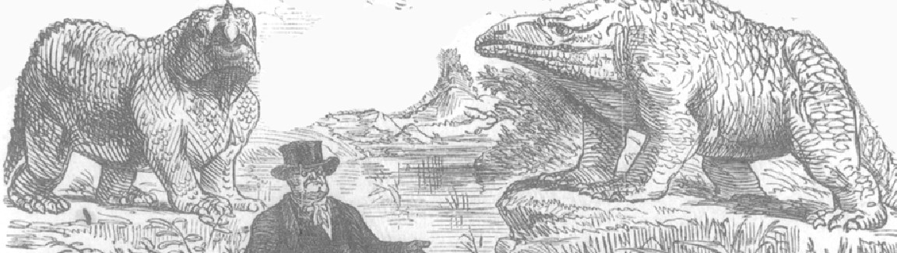
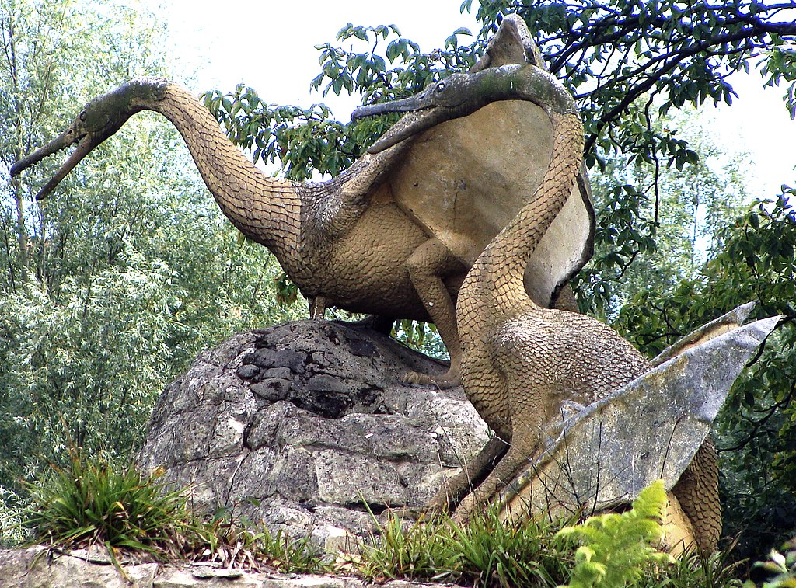
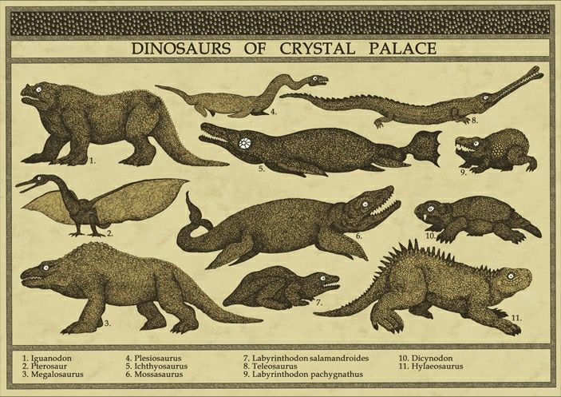
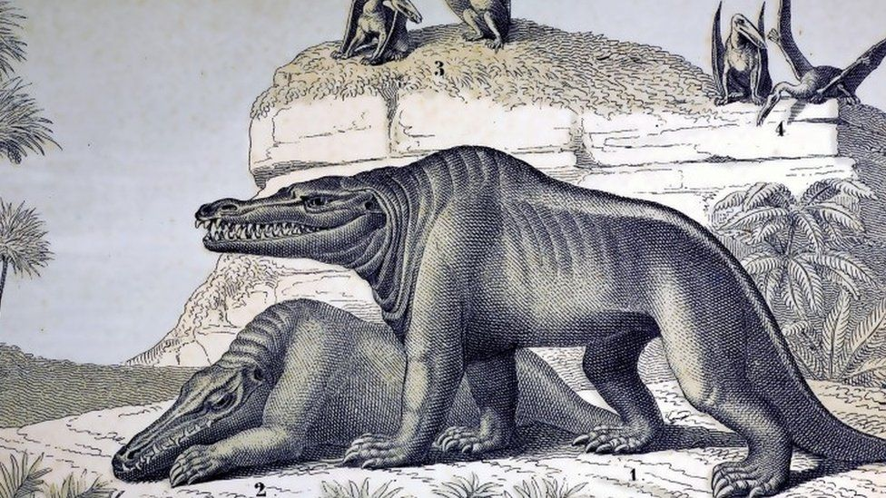

Los monstruos que creamos de nuestra imaginación.
Muchos años después de la desaparición de los romanos y griegos y que gran parte de sus ideas y conocimientos quedaran perdidos en el tiempo, la humanidad se olvidaria de investigar fosiles de creaturas muertas, puesto que a no mucha gente le interesaria este rubro de investigacion, a lo que la gente llamaria "huesos inútiles". La mayoria de estos descubrimientos de huesos y restos solo serian tirados a la basura o vendidos a mercaderes como objetos valiosos o minerales. Pero esta idea de poco cuidado e investigación a los fosiles cambiaria aprtir de 1824 un cientificos interesado en la zoologia de nombre Buckland descubririan los restos casi completos de un megalosaurio (el primer genero descrito de dinosauria), este descubrimiento fue fascinante para la ciencia en general puesto que esto ponia en evidencia que la tierra era mucho más antigua de lo que se creia y que antes del hombre y los mamíferos existieron seres y reptiles gigantes. Esto también inspiraria a Charles Darwin a escribir su libro "El origen de las especies" publicado en 1859, donde cubriria temas como la evolución y extinción, que eran temas poco escuchados en esos tiempos.
Tras que se descubriera los fosiles de dinosaurios y se viera un interes en la investigación de más fosiles se empezaria a fundar más escuelas donde se tomaria a la paleontologia como una materia y carrera importante para los estudiantes, aunque tambien habria grupos de personas interesadas en ganar dinero con la explotacion, venta y el prestigio de los descubrimientos de estos fosiles por lo cual se genero la "guerra de los huesos" donde grupos de paleontologos empezaron a reunir a grupos armados de mercenarios para competir con otros paleontologos para la poseseción de terrenos. Esta guerra se da solo por la necesidad de tener un prestigio y conseguir fama por el descubrimientos de estos huesos.
En esta epoca se dan las primeras reconstrucciones más serias y enfocadas sobre los dinosaurios y mamiferos gigantes pero a la ciencia le faltaria mucho tiempo aún para llegar a la verdad.
  